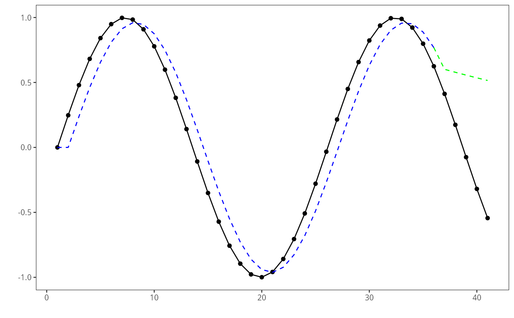

This function plots a time series chart with three lines: the original series, the adjusted series, and the predicted series using ggplot2.
Usage
plot_ts_pred(
x = NULL,
y,
yadj,
ypred = NULL,
label_x = "",
label_y = "",
color = "black",
color_adjust = "blue",
color_prediction = "green"
)Examples
data(sin_data)
ts <- ts_data(sin_data$y, 0)
ts_head(ts, 3)
#> t0
#> [1,] 0.0000000
#> [2,] 0.2474040
#> [3,] 0.4794255
samp <- ts_sample(ts, test_size= 5)
io_train <- ts_projection(samp$train)
io_test <- ts_projection(samp$test)
model <- ts_arima()
model <- fit(model, x=io_train$input, y=io_train$output)
adjust <- predict(model, io_train$input)
prediction <- predict(model, x=io_test$input, steps_ahead=5)
prediction <- as.vector(prediction)
yvalues <- c(io_train$output, io_test$output)
grf <- plot_ts_pred(y=yvalues, yadj=adjust, ypre=prediction)
plot(grf)
